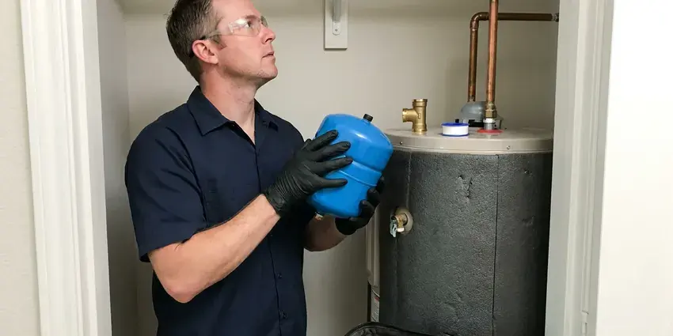

PEX Pipe Installation in Ewa Gentry, HI
Ensure your Ewa Gentry, HI home has a robust plumbing system with professional PEX pipe installation from HKL Plumbing.
- Durable & Flexible Pipe
- Licensed PEX Plumbers
- Clear Pricing
- Local Ewa Gentry Experts
Upgrade to Durable, Flexible PEX Plumbing in Ewa Gentry, HI.
We handle permits, drywall access, installation and patching so your home is back to normal quickly.
Expert PEX Pipe Installation and Whole-Home Repiping in Ewa Gentry, HI
When it comes to upgrading your home's plumbing, HKL Plumbing is your go-to for PEX pipe installation in Ewa Gentry, HI. We handle everything from full home repipes to new line installations, ensuring your system is robust and efficient for years to come.
Our expertise includes:
- Whole-home PEX repipes
- PEX-A expansion and PEX-B crimp fitting systems available
- Fixture and appliance PEX hookups

Additional Plumbing Installation Services in Ewa Gentry, HI
We install water heaters, pumps, lines, and fixtures across Ewa Gentry, HI with precision workmanship that meets every local code.


Customers
Why Choose HKL Plumbing for PEX Pipe Installation in Ewa Gentry, HI?
PEX piping offers better freeze resistance than copper or CPVC. Frozen pipes are essentially a non-issue for homes in Hawaii, since sea-level and most residential areas never get cold enough to freeze water lines. We make sure your new PEX system is installed correctly to maximize that benefit.
- Clean Worksite, We cover floors, contain dust and repair every access hole.
- Durability, PEX is highly resistant to corrosion, scale buildup and chlorine, common problems that degrade older metal pipes.
- Flexible, PEX can bend around corners, reducing the need for fittings and potential leak points.
Citywide Coverage
Our team covers the entire Ewa Gentry area, so no matter where you are located, professional PEX pipe installation is just a phone call away. We understand the plumbing needs of homes throughout Ewa Gentry.
Experienced Team
Our plumbing team has broad experience with PEX pipe installation and understands the differences between PEX types and connection methods. We use purpose-built tools for secure crimp, clamp or expansion connections, so every joint is solid.
Safety-First Approach
PEX must be kept out of direct sunlight and away from heat sources like water heater flues, so we sleeve and route it carefully in attics. We also follow distance requirements from the water heater using approved transition fittings.
Trusted Certified Ewa Gentry Plumbing Services Professionals
At HKL Plumbing, we take pride in providing licensed, certified plumbing services throughout Ewa Gentry, HI. Backed by leading industry credentials, our experienced plumbers combine technical skill with genuine customer care. Whether it is repair, installation, or maintenance, we follow strict safety and quality standards to deliver long-lasting results you can trust.
Call Us Now PHCC Plumbing Contractor Recognition
PHCC Plumbing Contractor Recognition Better Business Bureau (BBB) Accreditation
Better Business Bureau (BBB) Accreditation Angi Certified Pro
Angi Certified Pro ISO 9001 Quality Management Certification
ISO 9001 Quality Management CertificationReliable PEX Pipe Installation Services in Ewa Gentry, HI
Copper to PEX Conversions in Ewa Gentry
Copper lines can develop pinhole leaks from water chemistry, high velocity and sometimes soil contact under slabs. Most municipal water in Hawaii comes from volcanic groundwater aquifers and is usually soft to moderately hard, so heavy scale is less of a problem than in many places. Once a home has had several pinhole leaks, more usually follow. Converting to PEX stops the cycle and reduces the risk of hidden water damage. We use approved transition fittings wherever new PEX connects to existing copper stubs or valves.

New Construction PEX Plumbing in Ewa Gentry, HI
HKL Plumbing works with builders and homeowners on PEX pipe installation for new construction across Ewa Gentry, HI. PEX is an excellent choice for new homes due to its flexibility, ease of installation and cost-effectiveness. We design and install complete PEX plumbing systems, ensuring good water distribution and long-term reliability for your brand-new home.
Emergency PEX Pipe Repair & Installation in Ewa Gentry, HI
While PEX is highly durable, unexpected circumstances can sometimes lead to damage. If you have a PEX pipe issue or need an emergency repair or replacement in Ewa Gentry, HI, HKL Plumbing is here to help. Our emergency service makes sure any burst or damaged PEX lines are quickly repaired or reinstalled to limit water damage and restore your plumbing. We carry common PEX sizes and fittings to expedite repairs.
Commercial PEX Pipe Solutions in Ewa Gentry, HI
Beyond residential service, HKL Plumbing also provides PEX pipe installation for commercial properties in Ewa Gentry, HI. PEX offers advantages like efficient water distribution, reduced material costs for large projects and resistance to corrosion, which is crucial for commercial longevity. Whether it is a small office building or a multi-unit complex, our team can design and install a robust PEX plumbing system that meets commercial demands and codes.
Commercial PEX Pipe Installation in Ewa Gentry
Beyond residential work, HKL Plumbing also provides commercial PEX pipe installation for businesses in Ewa Gentry. PEX offers many advantages for commercial properties, including durability, resistance to harsh chemicals and cost savings on installation. We work efficiently to limit disruption to your business during any commercial plumbing upgrade or new installation.
Polybutylene Replacement With PEX in Ewa Gentry, HI
Gray polybutylene pipe was common in homes built from the late 1970s through the mid 1990s and is known for sudden failures. Chlorine in municipal water breaks down the plastic and its fittings over time. Plenty of insurers now ask about polybutylene when writing a policy. Replacing it with PEX removes that risk and can make your home easier to insure and sell.
Remodel and Addition PEX Rough-In in Ewa Gentry
Kitchen and bathroom remodels are a great time to replace old supply lines with PEX. We rough in new lines to the correct heights for vanities, showers, tubs and appliances, then pressure test before the walls are closed. Additions and guest suites get properly sized lines tied into your existing system. We coordinate with your contractor to keep the project schedule moving.

PEX for Remodels & Additions in Ewa Gentry, HI
Expanding your home or remodeling a kitchen or bathroom often requires new plumbing lines. PEX is an ideal choice for these projects in Ewa Gentry, HI due to its adaptability and ease of installation in existing wall cavities or new structures. We can cleanly tie new PEX lines into your current system, ensuring proper water supply to new fixtures and appliances without compromising your existing plumbing.
PEX Pipe Installation Near Me in Ewa Gentry, HI
Our plumbers repipe homes in Ewa Gentry regularly and understand local housing styles and inspection requirements. That experience helps us plan efficient routes and avoid surprises. We work efficiently so your household routine is disrupted as little as possible.
If you have had another leak and are searching for PEX pipe installation near me, schedule a free repipe estimate with our local team. We inspect your current pipes, attic access and fixture count. Then we give you a written price and schedule.
HKL Plumbing at a Glance
- Licensed and insured plumbers serving Ewa Gentry, HI
- 24/7 emergency service with same-day scheduling
- Clear written estimates, no hidden fees
- 4.8-star rated by 529+ Hawaii customers
Ewa Gentry Map
Ewa Gentry Information
- Population
- 25,707
- Area codes
- Local
- Service area
- Ewa Gentry and communities within 40 miles
- Nearby
- Ocean Pointe, Ewa Beach, Kapolei, Waipahu
PEX pipe installation is a wise investment for Ewa Gentry, HI homeowners, offering superior resistance to the corrosion and freeze damage that often hurt older metal pipes.
Expert Services
Trust our professionals for reliable HKL Plumbing solutions in Ewa Gentry, HI.
Our Specialized Plumbing Services in Ewa Gentry, HI
At HKL Plumbing, we provide a complete range of plumbing services across Ewa Gentry, HI. From leak detection to full system installations, our team ensures fast, precise, and affordable service for both residential and commercial properties. Explore our core services below:


Our Process for Installing PEX Pipe in Ewa Gentry, HI
At HKL Plumbing, we follow a simple process for PEX pipe installation to ensure efficiency, quality and minimal disruption to your home.
Request a Quote
Call (808) 649-6718 or fill out our online form to schedule an initial consultation. We will discuss your needs and provide a clear, upfront estimate for your PEX pipe installation.
On-Site Assessment
Our skilled plumbers visit your Ewa Gentry home to evaluate your existing plumbing and determine the best PEX piping solution. We identify access points and plan the most efficient pipe routing.
Installation & Testing
We carefully install the PEX piping, making sure all connections are secure and code-compliant. After installation, the system goes through rigorous pressure testing to confirm it is completely leak-free and working properly.
Frequently Asked Questions About PEX Pipe Installation in Ewa Gentry
A whole-home PEX repipe usually costs $4,500 to $12,000 depending on home size, bathroom count and access. Smaller jobs like a single bathroom remodel rough-in usually run $800 to $2,500.
We install high-quality PEX piping from reputable manufacturers such as Uponor (PEX-A), Viega (PEX-B) and Zurn (PEX-B). We also work with other proven brands like SharkBite for fittings, so the best materials are used for your installation.
A full home PEX repipe for an average-sized home in Ewa Gentry typically takes 3 to 5 days. Smaller projects or single-line replacements can often be completed in a single day. We aim to limit disruption and communicate timelines clearly.
Whole-home repipes usually require a plumbing permit and inspection. We handle the permit process as part of the project.
While PEX installation can look straightforward, professional installation is strongly recommended, especially for whole-home repipes or main line work. Proper tools, techniques and adherence to local plumbing codes are essential for a leak-free and safe system. DIY mistakes can lead to costly water damage and future repairs, so trusting HKL Plumbing for your Ewa Gentry installation gives you peace of mind.
While PEX is simpler to install than copper, professional installation is highly recommended. Correct sizing, routing and secure connections are crucial for preventing leaks and ensuring system longevity. Improper DIY installation can lead to costly water damage and code violations.
Signs you might need PEX repiping include persistently low water pressure, discolored or rusty water, frequent leaks, or old galvanized steel or polybutylene pipes. These issues are common in older Ewa Gentry homes and point to a failing plumbing system.
PEX offers several advantages over copper, including lower material and installation costs, greater flexibility and resistance to corrosion and freezing. Unlike copper, PEX does not form pinhole leaks over time due to water chemistry, making it a more durable choice for many Ewa Gentry homes. It also reduces water hammer noise.
What People Are Saying About Our Plumbing Experts?

Patricia H.
We had a slab leak that two other companies could not find. HKL Plumbing located it in under an hour, explained our options, and the price matched the quote to the dollar.
Slab Leak Repair · Makakilo, HI
Laura S.
I scheduled a water heater replacement, and the team made the process smooth and affordable. The new unit works perfectly, and they cleaned up after completing the job.
Water Heater Replacement · Ocean Pointe, HI
Emily R.
I called HKL Plumbing for plumbing repair, and the technician was fast, polite, and thorough. They explained the problem clearly and fixed it the same day. I will definitely hire them again. Highly recommended!
Plumbing Repair · Waipahu, HI
Mark T.
When our office needed drain cleaning, HKL Plumbing provided quick, reliable service. The plumber arrived on time and made sure every drain flowed perfectly before leaving. Very satisfied.
Drain Cleaning · Royal Kunia, HI
James P.
Our commercial plumbing system had a leak under the sink, and HKL Plumbing handled it professionally. The plumbers arrived quickly and restored everything without disruption to our customers.
Commercial Plumbing · Ocean Pointe, HIRobert G.
The trenchless sewer replacement saved our front yard. They walked us through the camera inspection footage first so we knew exactly what we were paying for.
Sewer Line Replacement · Ewa Beach, HI